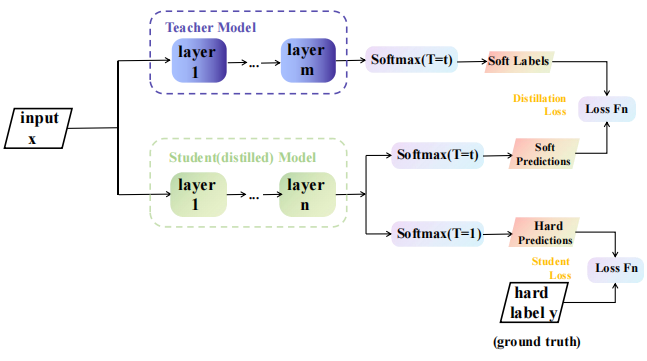

Peng(Richard) Xia 夏鹏Senior Undergraduate Student
School of Computer Science and Technology,
|
 |


üìúBiography
I am a senior undergraduate in the School of Computer Science and Technology, Soochow University. I am also a research assistant at Monash University. In 2023 fall, I will join the Monash Medical AI Group (MMAI) as a Ph.D. student at Monash University, advised by A/Prof. Zongyuan Ge, Dr. Peibo Duan and Dr. Deval Mehta.
My research lies at the intersection of vision and language, mainly focusing on medical field. I am always open to collaboration. Feel free to drop me an e-mail. :-)
✨News
- [07/2023] I join Monash Medical AI Group (MMAI) to pursue a Ph.D. degree at Monash University.
-
[08/2022] Share paper list about multi-modal learning in medical imaging.
- [07/2022] I start working at Airdoc as a research intern in Shanghai.
- [06/2022] I won third place award in Shanghai-HK Interdisciplinary Shared Tasks(2022) task 1 "Trigger Identification". [report] [slides] [code]

üìùSelected Publications

|
LMPT: Prompt Tuning with Class-Specific Embedding Loss for Long-Tailed Multi-Label Visual Recognition. P. Xia, D. Xu, L. Ju†, M. Hu, J. Chen, Z. Ge. Under Review. |

|
Detection of cognitive dysfunction in patients with atrial fibrillation: a deep learning model based on fundus photographs. Z. Wang*, C. Jiang*, P. Xia*, J. Ma, Y. Bai, Y. Lai, X. Peng, S. Li, T. Ma, L. Ju, L. He, X. Guo, S. Li, W. Wang, C. Jiang, N. Liu, R. Tang, D. Long, Y. Chen, C. Sang†, X. Du, Z. Ge, J. Dong, W. Wei†, C. Ma†. Submitted to Frontiers of Medicine. [paper] |
|  | Chinese grammatical error correction based on knowledge distillation. P. Xia, Y. Zhou, Z. Zhang, Z. Tang. and J. Li‚Ć. Project Report, 2022. |


üé®Patents
-
A fundus image prediction method for mental elasticity based on deep learning.
P. Xia, L. Ju,..., Z. Ge & D. Zhang.
CN Patent. Under Review.
-
Model training method, fundus image prediction method and device.
P. Xia, L. Ju,..., Z. Ge & D. Zhang.
CN Patent. CN202211633628.6, 2022.
-
Device for predicting cognitive impairment and computer readable storage medium.
P. Xia, L. Ju,..., Z. Ge & D. Zhang.
CN Patent. ZL202211611022.2, 2022.
-
Article quality discrimination software based on multi-model transfer pre-training.
J. Li, P. Xia, K. Zeng, et al.
CN Software Copyright. 2022SR0228307.
-
Lane detection system based on cascaded convolutional neural network.
J. Li, K. Zeng, P. Xia.
CN Software Copyright. 2022SR0248890.
üëîExperiences
-
Research Assistant, Monash Medical AI (MMAI), Monash University (01/2023-06/2023).
Advisor: A/Prof. Zongyuan Ge.
-
Research Intern, Airdoc (07/2022-01/2023).
Advisor: Ph.D. candidate Lie Ju and A/Prof. Zongyuan Ge.
-
UASR Summer Courses, Duke-NUS Medical School, National University of Singapore (06/2022-07/2022).
-
Research Intern, Institute of Artificial Intelligence, Soochow University (12/2021-04/2022).
Advisor: Prof. Min Zhang and Dr. Juntao Li.
-
Research Intern, Natural Language Processing Research Centre, Soochow University (10/2021-11/2021).
Advisor: Dr. Junhui Li.
-
Intern, China Construction Bank (07/2021-08/2021).
-
Vice President, Science and Technology Association, Soochow University (10/2020-07/2021).
üèÜSelected Awards
-
Third Place, Shanghai-HK Interdisciplinary Shared Tasks Task 1 (2022) -
Third Price, The 13th Lanqiao Cup Algorithm Competition (2022) -
Second Price, The 3rd Huawei DIGIX AI Algorithm Contest (2021) -
Winning Prize, The 8th Newland Cup Computer Design Contest (2021) -
Honorable Mention, Mathematical Contest In Modeling (2021) -
Second Price, The 6th LSCAT Cup Translation Competition (2020)
üè´Education
-
Ph.D. in Electrical and Computer Systems (Expected 2026)
Faculty of Engineering,
Monash University.
Advisor: A/Prof. Zongyuan Ge, Dr. Peibo Duan and Dr. Deval Mehta.
-
Bachelor of Engineering in Computer Science and Technology (06/2023)
Artificial Intelligence Experimental Class,
School of Computer Science and Technology,
Soochow University.
For Chinese version, please visit 中文版
© Peng Xia | Last updated: May. 2023